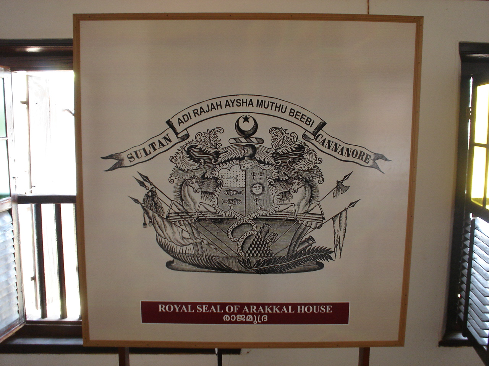

St. Angelo Fort

Perched above the Arabian Sea, St. Angelo Fort in Kannur stands as a historic marvel, seamlessly transporting visitors to a bygone era. Originally constructed by the Portuguese in the 16th century and later fortified by the British, the fort serves as a testament to the colonial struggles for dominance in the region. The well-preserved structure boasts distinctive architecture, featuring angular bastions and a scenic location near Moppila Bay. As visitors explore the ramparts, dungeons, and a lighthouse, they are treated to panoramic views of the coastline. St. Angelo Fort not only narrates tales of military strategy but also provides a serene environment for those seeking a harmonious blend of history and scenic beauty. It creates a captivating journey through time and landscape, inviting visitors to immerse themselves in the historical tapestry woven into the fort's formidable walls.
Muzhappilangad Drive-in Beach
Muzhappilangad Drive-in Beach, extending for about 4 kilometers along the Arabian Sea, is a unique destination that allows visitors to drive along the shoreline. Its gently sloping sandy shores create a natural pathway for vehicles, offering a thrilling and picturesque drive. The beach, lined with coconut groves, provides a laid-back atmosphere for relaxation and recreation. The opportunity to enjoy both the thrill of driving and the soothing coastal ambiance makes Muzhappilangad a popular and distinctive destination for beachgoers and adventure enthusiasts alike.

Arakkal Museum
Housed in the historic Arakkal Palace, the Arakkal Museum stands as a cultural gem, shedding light on the history of the region's only Muslim royal family. This museum meticulously displays artifacts, relics, and personal belongings of the Arakkal family, offering profound insights into their royal lifestyle and significant contributions. The palace itself, with its architectural marvel, becomes the backdrop for a captivating journey through time. The exhibits, ranging from weaponry to portraits, create a vivid narrative of Kannur's unique historical tapestry. As visitors explore the rich heritage preserved within the museum's walls, they become immersed in the tales of the Arakkal rulers, unraveling the layers of a bygone era and gaining a deeper appreciation for the cultural intricacies that define Kannur's history. The Arakkal Museum thus becomes a compelling destination, bridging the past and present through its historical treasures.